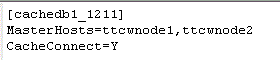
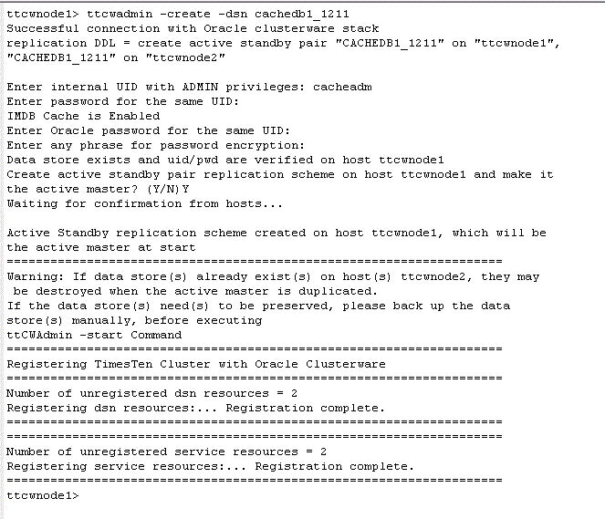
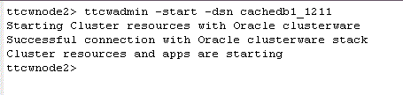

with TimesTen Application-Tier Database Cache and Clusterware
This tutorial will make use of the DSN cachedb1_1211 as the active master database. The hostnames of the two machines in the examples are ttcwnode1 and ttcwnode2. On ttcwnode1 will be the active cache database, and on ttcwnode2 the standby cache database.
The following steps are required to configure an Active Standby Pair with Oracle TimesTen Application-Tier Database Cache (TimesTen Cache) and Clusterware:
1. Create a cache database
2. Create a database user to administer the active standby pair
Follow the tutorials below to create an initial cache database cachedb1_1211 on ttcwnode1:
On ttcwnode2, ensure that an identical system DSN (i.e. [cachedb1_1211]) and database file name (cachedb1_1211) is defined. This is necessary for the successful creation of the standby database on ttcwnode2.
3. Start the cache agent
On ttcwnode1, create a database user and assign to be the database and replication administrator by granting the user the admin privilege. This user is responsible for setting up and managing the active standby pair.
Instead of creating a new database user, you can also grant the required privilege to the previously created cache manager user cacheadm. This will make cacheadm responsible for managing both replication and cache operations.
Using ttIsql, log into the database cachedb1_1211 as the instance administrator and execute:
grant admin to cacheadm;
Note: In the Setting Up a Cache Database tutorial, we have already granted the ADMIN privilege to cacheadm, hence this step is not needed.
4. Define cache groups
On ttcwnode1, log in to ttIsql as the user cacheadm, passing in the TimesTen and Oracle user passwords for cacheadm.
ttIsql
connect "dsn=cachedb1_1211;uid=cacheadm;pwd=cacheadm;oraclepwd=cacheadm";
Call the built-in procedure ttCacheStart to start the cache agent for the current database.
call ttcachestart;
The cache agent process is responsible for managing the communication between cache databases, as well as controlling the data flow from an Oracle database to a TimesTen Application-Tier Database Cache.
ttCWAdmin supports Read Only, AWT, SWT, dynamic and non-dynamic local cache groups.
On ttcwnode1 run the script create_local_ro.sql or enter the following CREATE CACHE GROUP statement, located in the <QUICKSTART_HOME>/sample_scripts/cache directory to create a read-only local cache group named ro to cache the HR.DEPARTMENTS table.
Either run the create_local_ro.sql script:
@<QUICKSTART_HOME>/sample_scripts/cache/create_local_ro.sql;
or run the following code:
create readonly cache group ro
autorefresh
interval 5 seconds
mode incremental
from
hr.departments ( department_id number(4) not null primary key,
department_name varchar2(30) not null,
manager_id number(6),
location_id number(4));
5. Register the TimesTen Instance Information
TimesTen instance information is stored in the Oracle Cluster Registry. As the root user on UNIX or Linux platforms, register the TimesTen instance information by executing the ttCWAdmin -ocrConfig command on one of the hosts. For example, on ttcwnode1:
ttcwadmin -ocrconfig

6. Start the Cluster Agent
Start the TimesTen cluster agent by executing the ttCWAdmin -init command on one of the hosts. For example on ttcwnode1:
ttCWAdmin -init
This command starts TimesTen Clusterware agents and TimesTen daemons on all nodes in the cluster and starts monitoring them through Oracle Clusterware.

7. Create the TimesTen cluster.oracle.ini configuration file
For a basic active standby pair configuration with local cache groups, only the MasterHosts and CacheConnect attributes are needed.

The cluster.oracle.ini entry name (eg [cachedb1_1211]) must correspond to the system DSN for the active and standby databases.
Note: When you use the ttInstanceCreate or ttInstanceModify to add support for Oracle Clusterware, the mandatory MasterHosts attribute will be created in the cluster.oracle.ini file for you. For more complex configurations, you need to add the relevant attributes yourself in the cluster.oracle.ini file on every node in the cluster.
8. Create an Active Standby Pair
Drop any existing [SQL] Active Standby Pair for the cachedb1_1211 database.
drop active standby pair;
You cannot mix Active Standby Pairs managed by SQL and managed by ttCWAdmin. An Active Standby Pair for a cache database should be managed by either SQL or by ttCWAdmin, and not by both.
Create an Active Standby Pair replication scheme by executing the ttCWAdmin -create command on any host. For example on ttcwnode1:
ttcwadmin -create -dsn cachedb1_1211

Based on the cachedb1_1211 entries in the system DSN and the cluster.oracle.ini, this command created the replication scheme for the cachedb1_1211 database on the ttcwnode1 and ttcwnode2 machines.
9. Start the Active Standby Pair
Start the Active Standby Pair replication scheme by executing the ttCWAdmin -start command on any host. For example on ttcwnode2:
ttcwadmin -start -dsn cachedb1_1211

Notes:
- ttCWAdmin -start will automatically start the replication agent on the standby machine and duplicate the active database into the standby host.
- The time taken to duplicate the active database will be proportional to the size of the active database and the performance of the hardware used.
- Once the Active Standby Pair has be started by ttCWAdmin, committed writes to the active database will be written to its local transaction logs, but they will not get replicated to the standby database until the duplicate operation is complete.
- The ttCWAdmin -status -dsn <your_DSN> command enables you to check the progress of the database duplication.
- You can login to the cachedb1_1211 database using ttIsql and use the built-in procedure ttRepStateGet to determine to current replication and the state of a database in an active standby pair. If the output from ttRepStateGet is:
< ACTIVE, NO GRID > in ttcwnode1
< STANDBY, NO GRID > in ttcwnode2
then the configuration of the active standby pair is complete.
10. Preload data into cache groups
Populate the cache group by loading the rows from Oracle.
This command must be run on the active node, which in this example was initially set to ttcwnode1.load cache group ro commit every 256 rows;

Click here to learn how to manage the Active Standby Pair with Application-Tier Database Cache and Clusterware.
For more information about Using and Configuring an Active Standby Pair with TimesTen Cache and Oracle Clusterware refer to the documentation here